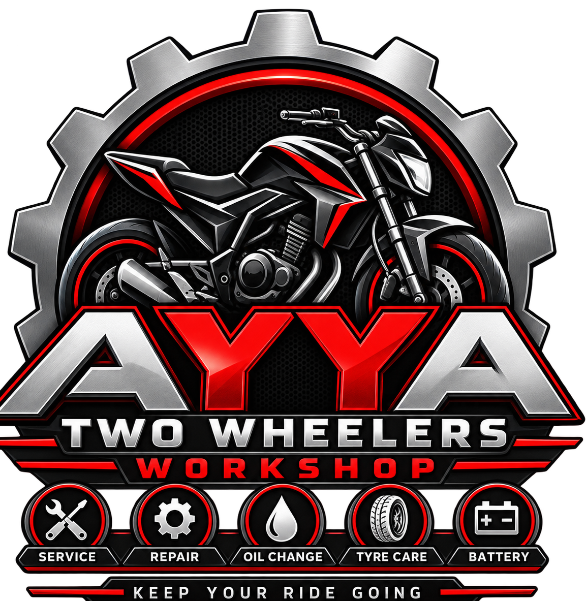

Quality Work
Careful repair and service work handled with proper tools and attention.

Professional two-wheeler service, repair and maintenance focused on keeping your ride reliable, smooth and road-ready.
To provide dependable two-wheeler service with honest workmanship, quality care and customer-first service.
Careful repair and service work handled with proper tools and attention.
Regular checks and practical care to keep your bike running smoothly.
Clear communication, fair guidance, and service you can depend on.